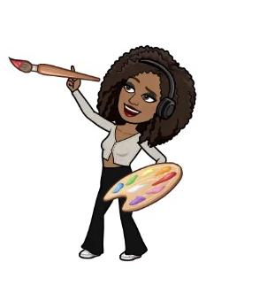
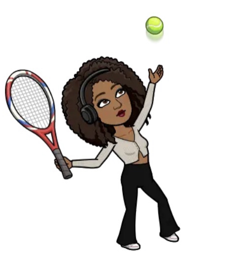
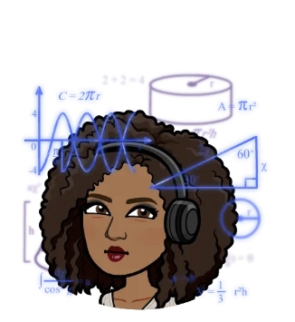
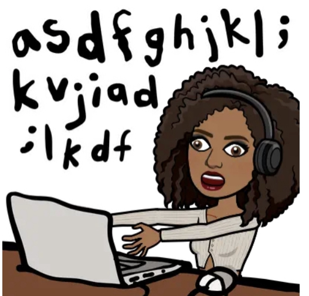

Hello and Welcome to my personal website!
I’m currently a freshman here at Rice, with a passion for learning new things.
This website is my first project with Girls Who Code and ever!
All my interests as a child have always pointed towards STEM, so I've spent my last two summers immerging myself in Accelerated College Courses for my Mathematics A.S., Programming, and picking up new hobbies . I was part of my school's robotics team, I even got to volunteer at FIRST global competition as a Student Ambassador. So as facinating as that was, I knew I wanted to play a key role in my teams perfomance in our next competition. Now I am looking to expand my talents with RiceApps, while also making in an impact in our community!
In this website you’ll find my latest projects and learn a little about me :)
My interests
-Painting
-Nature
-Participating in clubs at school
-Puzzles and lego building
   